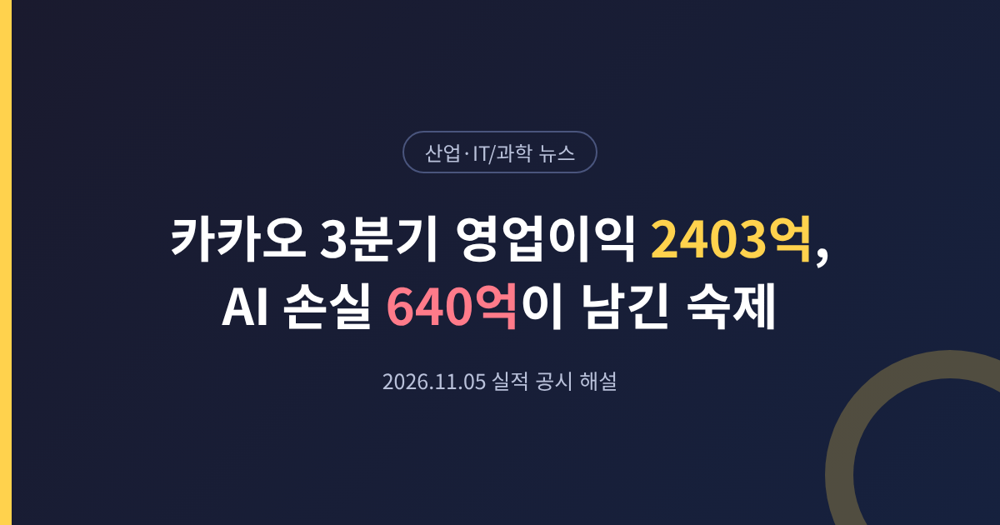
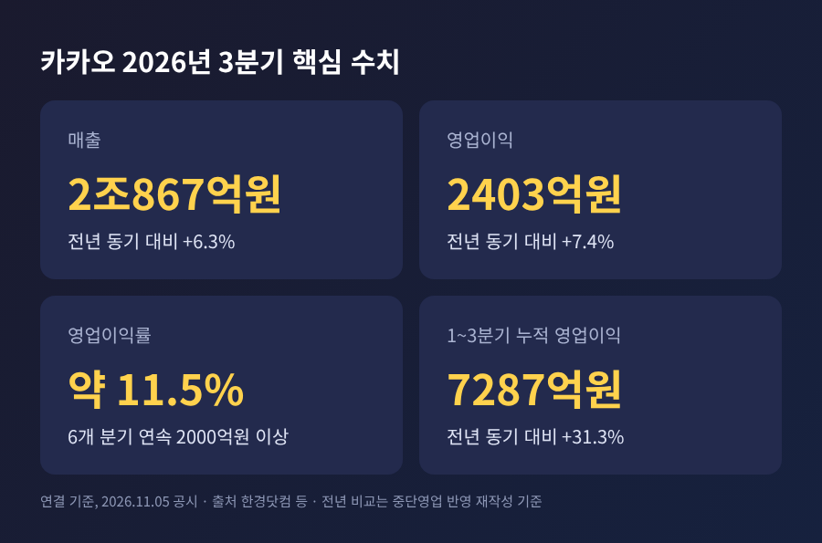
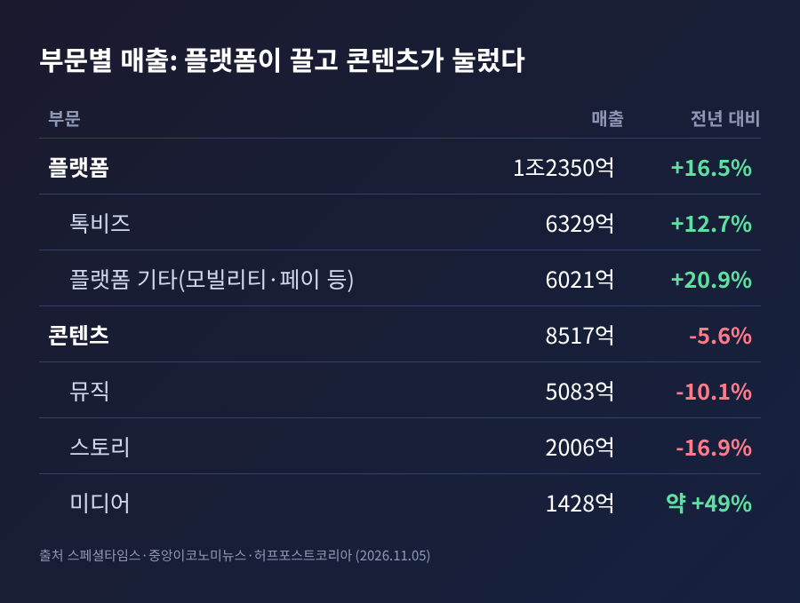
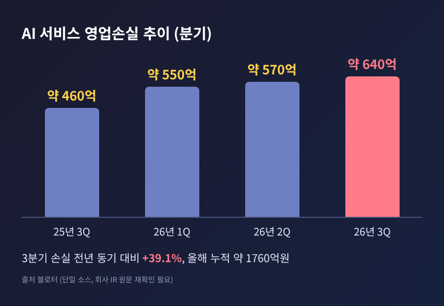
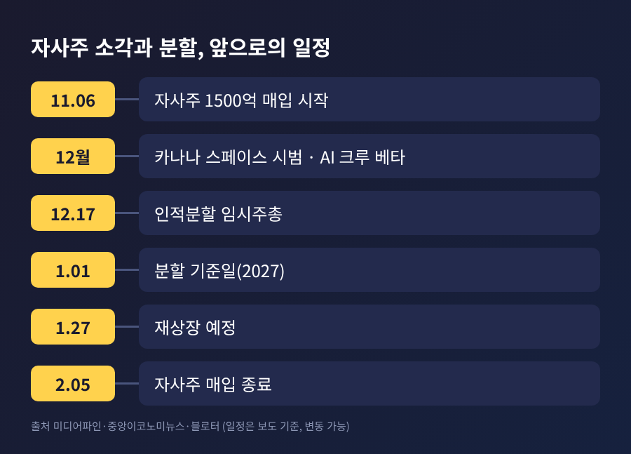
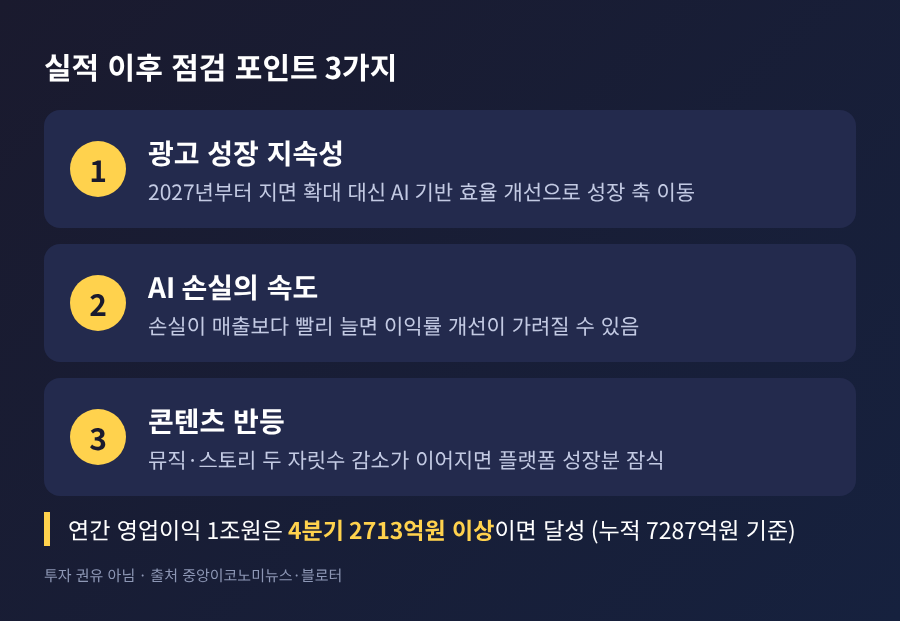

카카오 3분기 영업이익 2403억, AI 손실 640억이 남긴 숙제

오늘은 카카오가 11월 5일 공시한 3분기 실적을 정리해 보겠습니다. 영업이익은 2403억원으로 1년 전보다 7.4% 늘었고, 시장 기대에는 소폭 못 미쳤습니다. 같은 날 주가는 장중 10% 넘게 올랐습니다. 숫자 뒤에 있는 광고 성장, AI 서비스 손실, 자사주 소각의 의미를 차례로 짚습니다.
세 줄 요약
- 3분기 매출은 2조867억원(+6.3%), 영업이익은 2403억원(+7.4%)입니다. 영업이익은 컨센서스(2483억원)보다 약 3.2% 낮았습니다.
- 성장은 카카오톡 광고와 커머스가 이끌었고, 콘텐츠는 뒷걸음질했습니다. AI 서비스 손실은 약 640억원으로 커졌습니다.
- 1500억원 자사주 매입·소각이 결정됐습니다. 연간 영업이익 1조원은 4분기 2713억원 이상이 관건입니다.
■ 무슨 일이 있었나
카카오는 5일 연결 기준 3분기 실적을 공시했습니다. 매출은 2조867억원으로 전년 동기보다 6.3% 늘었습니다. 영업이익은 2403억원으로 7.4% 늘었고, 영업이익률은 약 11.5%입니다. 6개 분기 연속 영업이익 2000억원 이상을 이어갔습니다.
직전 분기와 비교하면 얼굴이 조금 달라집니다. 매출은 0.6%, 영업이익은 13.3% 줄었습니다. 2분기 영업이익이 2770억원으로 높았던 영향입니다. 1~3분기 누적 영업이익은 7287억원으로 전년 같은 기간보다 31.3% 많습니다.
한 가지 짚어둘 점이 있습니다. 전년 동기 비교 기준입니다. 한경닷컴에 따르면 비교 대상인 전년 3분기 영업이익은 카카오헬스케어와 카카오게임즈를 중단영업으로 반영해 다시 계산한 2238억원입니다. 당시 발표했던 2080억원과는 다릅니다. 따라서 '7.4% 증가'는 재작성 수치 기준이라는 점을 알고 읽으시길 권합니다.

■ 시장 기대와 비교하면
매출은 기대를 웃돌았고 영업이익은 밑돌았습니다. 블로터와 서울경제TV가 전한 컨센서스는 매출 2조420억원, 영업이익 2483억원입니다. 실제 매출은 이를 2.2% 웃돌았고, 영업이익은 3.2% 낮았습니다. 이코노미트리뷴 기준입니다.
평가는 매체마다 조금씩 다릅니다. 블로터는 '시장 전망에 부합'이라고 했고, 서울경제TV는 '소폭 밑돌았다'고 적었습니다. 숫자는 같고 표현만 다릅니다. 큰 충격이 없는 무난한 실적이라는 정도로 이해하면 무리가 없어 보입니다.
그럼에도 주가는 크게 움직였습니다. 잡포스트에 따르면 5일 오후 2시 52분 기준 3만2050원으로 전일 종가(2만9100원)보다 10.14% 올랐습니다. 종가는 확인하지 못했습니다. 이코노미트리뷴은 실적과 자사주 소각에 더해 미국 AI 관련주의 투자심리가 영향을 줬을 가능성을 함께 언급했습니다. 원인을 하나로 단정하기는 어렵습니다.
■ 성장은 어디서 나왔나
플랫폼 부문이 실적을 끌었습니다. 매출은 1조2350억원으로 16.5% 늘었고, 전체 매출의 약 59%를 차지합니다.
핵심은 톡비즈입니다. 매출 6329억원(+12.7%) 가운데 광고·구독이 3915억원(+11%)이었습니다. 톡 디스플레이 광고는 35% 증가했습니다. 커머스 거래액은 2조3000억원(+13%), 매출은 2413억원(+16%)입니다. 선물하기는 9월 월간 거래액이 역대 최고였고, 서울경제TV는 추석 연휴 효과를 이유로 들었습니다. 본인이 쓰려고 사는 '자기 구매' 고객은 23%, 거래액은 33% 늘어 커머스 거래액의 약 30%까지 올라왔습니다.
모빌리티·페이 등이 담긴 플랫폼 기타 매출도 6021억원으로 20.9% 늘었습니다.
반면 콘텐츠 부문은 8517억원으로 5.6% 줄었습니다. 뮤직이 5083억원(-10.1%), 스토리(웹툰·웹소설)가 2006억원(-16.9%)입니다. 미디어만 1428억원으로 약 49% 늘었습니다. 신종환 CFO는 "신규 IP 발굴과 기존 IP의 생애주기 확장을 위한 노력도 병행하며 중장기 성장 동력을 마련해 나가겠다"고 밝혔습니다. 수익성 방어가 우선이라는 뜻으로 읽힙니다.

■ AI 서비스 손실이 왜 중요한가
이번 실적의 진짜 논점은 AI입니다. 블로터에 따르면 3분기 AI 서비스 영업손실은 약 640억원입니다. 1년 전 약 460억원보다 39.1% 늘었습니다. 올해 1분기 약 550억원, 2분기 약 570억원을 합치면 3분기 누적 손실은 약 1760억원입니다. 이 손실 수치는 블로터 한 곳에서만 확인했기 때문에, 회사 IR 원문으로 재확인이 필요합니다.
카카오의 영업이익률은 2024년 6.2%에서 2025년 9.0%, 올해 상반기 12.1%로 올라왔습니다. 광고와 커머스가 번 돈이 이익을 키웠고, 그 일부를 AI가 다시 쓰는 구조입니다.
정신아 대표는 이날 콘퍼런스콜에서 AI 서비스 확산 속도가 자본시장 기대에 못 미쳤다는 평가를 "뼈아픈 평가"로 받아들인다고 말했습니다. 시장 기대를 넘는 서비스를 빠르게 내놓는 데 자원을 모으겠다고도 했습니다. 한계를 스스로 인정한 대목입니다.
회사가 내놓은 계획은 이렇습니다.
- 12월: 카카오톡 AI 비서 '카나나 스페이스' 사전 신청자 대상 시범 서비스, 광고주용 'AI 크루' 비공개 베타
- 연내: PC용 AI 도구 '칸바스', '모두의 AI' 출시, AI 월간 활성 이용자 1000만명 목표
- 2027년 1분기: 이용자 선호를 AI가 활용하게 하는 공통 메모리 인프라 구축
- 2028년: AI 서비스 손익분기점 수준, 신규 AI 매출이 톡비즈 매출의 두 자릿수 비중
- 2030년: AI 일간 활성 이용자 2000만명 이상
비용 대책도 흥미롭습니다. 정 대표는 AI가 브라우저를 직접 조작해 결제까지 하면 호출 비용이 건당 약 800~900원이 들 수 있다고 설명했습니다. 외부 서비스와 직접 연동하는 방식(A2A·MCP)은 약 5원 수준까지 낮출 수 있다고 했습니다. GPU는 직접 사지 않고 클라우드를 활용한다는 방침입니다. 모두 블로터 보도에 근거한 설명입니다.

■ 자사주 소각과 인적분할은 어떻게 이어지나
이사회는 1500억원 규모의 자사주 매입·소각을 결의했습니다. 515만4639주로 발행주식의 약 1.2%입니다. 취득 기간은 11월 6일부터 내년 2월 5일까지이고, 매입한 주식은 전량 소각합니다.
배경이 있습니다. 허프포스트코리아에 따르면 카카오는 8월 공시에서 자사주 취득 계획이 없다고 밝혔습니다. 그 뒤 인적분할을 발표하며 주주가치 제고 방안을 검토해 왔다고 설명했습니다. 중앙이코노미뉴스와 블로터는 분할 후 카카오X가 3000억원을 매입·소각할 계획이었는데, 그 절반을 분할 전 카카오 주식으로 앞당겼다고 전했습니다. 나머지 1500억원은 분할 후 2027년 안에 카카오X가 집행합니다.
인적분할은 12월 17일 임시주주총회 표결을 앞두고 있습니다. 중앙이코노미뉴스에 따르면 내년 1월 1일 카카오AI와 카카오X로 나뉘고, 1월 27일 재상장을 예정하고 있습니다. 분할 쟁점은 지난 4일 글에서 다뤘으므로 여기서는 일정만 짚습니다. 이번 실적의 의미는 분할 이후 'AI 사업을 맡을 회사'가 얼마나 벌고 얼마나 쓰는지를 가늠하게 해 준다는 데 있습니다.

■ 앞으로 무엇을 볼까
연간 영업이익 1조원이 첫 번째 관문입니다. 1~3분기 누적이 7287억원이므로 4분기에 2713억원 이상이면 넘습니다. DB증권은 올해 1조19억원, 내년 1조2034억원을 전망했습니다. 지난해 연간 영업이익은 7320억원이었고, 올해 3분기 누적이 이미 그에 육박합니다. 다만 DB증권 전망은 중앙이코노미뉴스 단일 인용입니다.
회사는 연결 매출 10% 이상 성장과 영업이익률 10% 목표를 유지했고, 4분기 광고 매출도 두 자릿수 성장을 예상합니다. 콘텐츠는 방어에 집중합니다.
체크할 지점은 세 가지입니다.
- 광고 성장 지속성: 2027년부터는 광고 지면 확대보다 AI 기반 효율 개선으로 성장 축을 옮기겠다는 계획입니다.
- AI 손실의 속도: 손실이 매출 증가보다 빠르게 늘면 이익률 개선이 가려질 수 있습니다.
- 콘텐츠 반등: 뮤직과 스토리의 두 자릿수 감소가 이어지면 플랫폼 성장분을 갉아먹습니다.
증권가는 신중합니다. 이코노미트리뷴에 따르면 최근 주요 증권사 목표주가는 대체로 3만5000~4만7000원이고, 인하 이유로 하반기 성장 둔화와 AI 수익화 가시성 지연이 꼽혔습니다. 개별 증권사 수치는 확인되지 않았습니다.

정리하면 이렇습니다.
예전에는 카카오의 숙제가 '광고가 계속 늘 것인가'였다면, 지금은 '광고로 번 돈으로 AI를 언제 수익으로 바꿀 것인가'로 옮겨 왔습니다. 이번 실적은 앞의 질문에 일단 합격점을, 뒤의 질문에는 아직 답을 유보한 성적표입니다.
"본업은 단단하고, AI는 증명할 시간." 이번 분기의 한 줄 요약입니다.
2028년 손익분기라는 약속이 지켜질지는 12월 시범 서비스와 내년 분기 실적이 차례로 말해 줄 것입니다. 숫자가 쌓이는 쪽에서 판단하셔도 늦지 않습니다.
※ 이 글은 공개된 보도를 정리한 정보 제공용 해설이며, 특정 종목의 매수·매도를 권하는 투자 권유가 아닙니다. 수치는 2026년 11월 5일 보도 기준이며 이후 정정될 수 있습니다.
참고 보도 한경닷컴, 중앙이코노미뉴스, 미디어파인, 스페셜타임스, 블로터, 서울경제TV, 이코노미트리뷴, 허프포스트코리아, 잡포스트 (모두 2026-11-05)